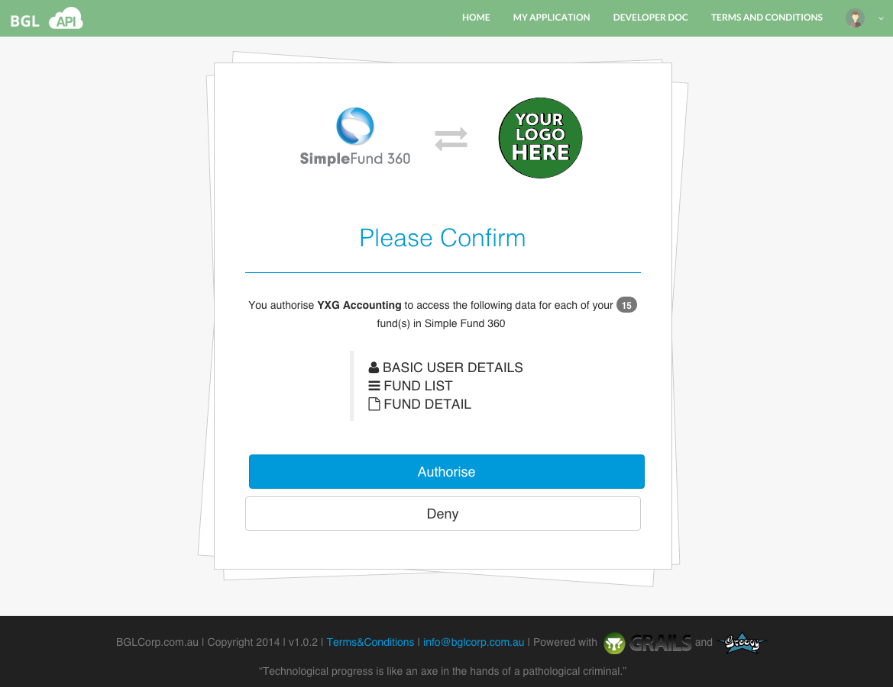

- Introduction
- 1. Getting Started
- 2. My Application
- 3. Token Manager
- 4. Grant Refresh Token
- 5. API Scope(s)
- 6. API Rate Limits
- 7. API Application Type(s)
- 8. API Application Status
- 9. Resource Requests
- 10. Sample Data
- 11. Change Log
- Published using GitBook
Request for an Authorization Code ( Step 2/4 )
An Authorization Code is necessary to retrieve an Access Token from the BGL API. Obtaining an Authorization token is an important step, as it provides assurance to the client that appropriate permission is being granted to access the BGL API.
To request an Authorization Code, the client application must send an HTTP request to the BGL API in the following manner.
| Method | URI |
|---|---|
| GET | https://api-staging.bgl360.com.au/oauth/authorize?response_type=code&client_id=<API-Client-ID>&scope=<Scope > |
The URL query parameters are as follows.
| Parameter | Description | Required |
|---|---|---|
| response_type | The value of this should always be: code. | Mandatory |
| client_id | A unique identifier to identify a client application that will be using the BGL API.
See Obtaining BGL API Credentials on how to obtain Client Id. |
Mandatory |
| redirect_uri | The URI that will be used to redirect after authorization. This value must match one of the defined OAuth 2.0 Redirect URLs in your application configuration, as described in the Oauth2 Documentation. See Obtaining BGL API Credentials on how to set redirect uri. | Optional |
| state | An opaque value used by the client to maintain state between the request and callback. The authorization server includes this value when redirecting the user-agent back to the client. This parameter should be used for preventing cross-site request forgery as described in Oauth2 Documentation. Example : state=DCEeFWf45A53sdfKef424 |
Optional |
| scope | A URL-encoded, space delimited list of member permissions your application is requesting on behalf of the user. Currently available scopes are listed in the API Scopes. |
Mandatory |
Once the request is processed, one of the following will occur.
1. BGL Login Page
If the user has not logged in to any BGL system prior to requesting an Authorization Code, the user will be redirected to the BGL Login Page. The user needs to input a username and password (Simple Fund 360 Demo Account can be used here) and log in to BGL.
Once the user has succesfully logged in to BGL, the user will be redirected to the API Authroisation Page as explained below.

2. Authorisation Page
If the user has not previously accepted the application's permission request, the grant has expired or been manually revoked by the user, the system will be redirected to the API's authorisation screen as displayed below.

3. Redirect URL
When the user completes the authorisation process, the browser is redirected to the URL provided in the redirect_uri query parameter or default redirect_uri in the API setup, with the authorization code.
If a valid granted permission exists for the client, the authorisation screen will be bypassed and the user will be immediately redirected to the URL provided in the redirect_uri query parameter, which will contain the authorization code and a state if a state parameter was sent in the original request.
Example : http://www.client-url.com.au/oauth/authCode?code=LqAx2wO
For security reasons, the authorization code has a very short lifespan ( about 5 - 10 mins ) and must therefore be used as soon as it is received. If the authorization code expires, the client needs to re-request a new authorization token by performing a request to the BGL API, as explained above.
Before the client application accepts the authorization code, the client application should ensure that the value returned in the state parameter matches the state value from the original authorization code request made to BGL with the state parameter. This ensures that you are dealing with the real original user and not a malicious script that may have slipped into the middle of your authentication flow. If the state values do not match, you are likely the victim of a CSRF attack.
There may be instances where the request for a Authorization Code may fail or be denied. The table below illustrates the causes of a bad request and the outcome the client sees.
| Cause | Description | Error | Error Description |
|---|---|---|---|
| Invalid Client Id | When an invalid client id is passed as a query parameter. | INVALID CLIENT | BAD CLIENT CREDENTIALS |
| Invalid Response Type | If response type parameter contains anything except "code". | UNSUPPORTED_RESPONSE_TYPE | UNSUPPORTED RESPONSE TYPE <The passed invalid code> |
| Invalid scope | Currently available scopes are listed in the API Scopes. If the client passes anything else as scope, BGL will return an error. | INVALID_SCOPE | Invalid scope : <The invalid scope passed> |
| Invalid redirect URI | The client should pass the redirect uri that was registered with BGL, as explained in Obtaining BGL API Credentials. If an invalid redirect uri is passed as the redirect_uri parameter, BGL will respond with an error. | INVALID GRANT | INVALID REDIRECT: <passed invalid uri> DOES NOT MATCH ONE OF THE REGISTERED VALUES: [<the url that is registered with the system>] |